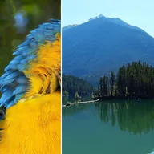

Achtergrond kopiëren

Heette vroeger Aanpassingslaag. Kopieert wat onder de laag is getekend, zodat de effecten erna die kopie bewerken. Maskeren op laag beperkt de kopie tot de ondoorzichtige delen van de laag. Mix brengt de vulling van de laag terug. Met Effecten buiten laag kunnen latere effecten, zoals Uitrekken, de kopie voorbij de randen van de laag brengen.
Achtergrond kopiëren maakt van een laag een aanpassingslaag. Het kopieert alles wat onder de laag getekend is, zodat de effecten die erna komen al die lagen tegelijk veranderen. Zet de laag boven de lagen die je wilt aanpassen, voeg dit effect toe en zet er daarna effecten achter zoals Kleurtoon & verzadiging of Vervaging. Maskeren op laag beperkt de verandering tot de eigen vorm van de laag, zodat je maar een deel van het beeld vervaagt of kleurt. Mix brengt de eigen vulling van de laag terug. Met Effecten buiten laag kunnen latere effecten, zoals de effecten voor uitrekken, de kopie voorbij de randen van de laag trekken. Dit effect heette vroeger Aanpassingslaag.
Instellingen
| Instelling | Type | Bereik | Standaard |
|---|---|---|---|
| Mix | Getal | 0 tot 1 | 0 |
| Maskeren op laag | Aan of uit | – | Aan |
| Effecten buiten laag | Aan of uit | – | Uit |